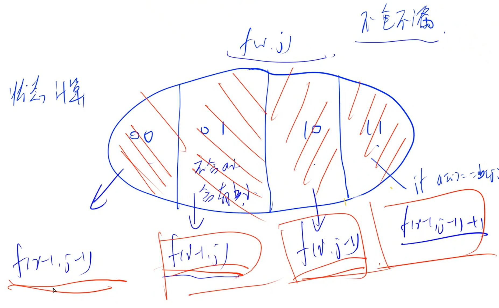

DP 问题

背包问题
0 1 背包 每件物品最多用一次
完全背包 每件物品有无限个
多重背包 每件物品的数量不一样
分组背包 每组物品有若干个，但是每组只能装一个
01 背包问题
AcWing 2. 01背包问题
https://www.acwing.com/problem/content/2/
有 N 件物品和一个容量是 V 的背包。每件物品只能使用一次。
第 i 件物品的体积是 vi，价值是 wi。
求解将哪些物品装入背包，可使这些物品的总体积不超过背包容量，且总价值最大。 输出最大价值。
输入格式
第一行两个整数，N，V，用空格隔开，分别表示物品数量和背包容积。
接下来有 N 行，每行两个整数 vi,wi，用空格隔开，分别表示第 i 件物品的体积和价值。
输出格式
输出一个整数，表示最大价值。
数据范围
0<N,V≤1000 0<vi,wi≤1000
输入样例
14 521 232 443 454 5
输出样例：
xxxxxxxxxx118
一篇讲解二维降一维的博文
二维代码：
x1using namespace std;4const int N = 1010;5int n, m;6int dp[N][N];7int v[N], w[N];8
9int main(){10 cin >> n >> m;11 for (int i = 1; i <= n; i++) cin >> v[i] >> w[i];12
13 for (int i = 1; i <= n; i++)14 for (int j = 1; j <= m; j++)15 {16 dp[i][j] = dp[i - 1][j];17 if(j >= v[i]) dp[i][j] = max(dp[i][j], dp[i - 1][j - v[i]] + w[i]);18 }19
20 cout << dp[n][m];21 return 0;22}一维代码：
xxxxxxxxxx181using namespace std;4const int N = 1010;5int n, m;6int dp[N];7int v[N], w[N];8
9int main(){10 cin >> n >> m;11 for (int i = 1; i <= n; i++) cin >> v[i] >> w[i];12
13 for (int i = 1; i <= n; i++)14 for (int j = m; j >= v[i]; j --)15 dp[j] = max(dp[j], dp[j - v[i]] + w[i]);16 cout << dp[m];17 return 0;18}y总代码：
xxxxxxxxxx251
4using namespace std;5
6const int N = 1010;7
8int n, m;9int v[N], w[N];10int f[N];11
12int main()13{14 cin >> n >> m;15
16 for (int i = 1; i <= n; i ++ ) cin >> v[i] >> w[i];17
18 for (int i = 1; i <= n; i ++ )19 for (int j = m; j >= v[i]; j -- )20 f[j] = max(f[j], f[j - v[i]] + w[i]);21
22 cout << f[m] << endl;23
24 return 0;25}
B站上图示讲解 01 背包问题的视频


完全背包问题


AcWing 3. 完全背包问题
https://www.acwing.com/problem/content/3/
有 N 种物品和一个容量是 V 的背包，每种物品都有无限件可用。
第 i 种物品的体积是 vi，价值是 wi。
求解将哪些物品装入背包，可使这些物品的总体积不超过背包容量，且总价值最大。 输出最大价值。
输入格式
第一行两个整数，N，V，用空格隔开，分别表示物品种数和背包容积。
接下来有 N 行，每行两个整数 vi,wi，用空格隔开，分别表示第 ii 种物品的体积和价值。
输出格式
输出一个整数，表示最大价值。
数据范围
0<N,V≤1000 0<vi,wi≤1000
输入样例
xxxxxxxxxx514 521 232 443 454 5
输出样例：
xxxxxxxxxx1110
xxxxxxxxxx241
4using namespace std;5
6const int N = 1010;7
8int n, m;9int v[N], w[N];10int f[N];11
12int main()13{14 cin >> n >> m;15 for (int i = 1; i <= n; i ++ ) cin >> v[i] >> w[i];16
17 for (int i = 1; i <= n; i ++ )18 for (int j = v[i]; j <= m; j ++ )19 f[j] = max(f[j], f[j - v[i]] + w[i]);20
21 cout << f[m] << endl;22
23 return 0;24}
多重背包问题


按照完全背包的优化方式行不通
使用二进制的方法进行优化，最终优化成为 01背包问题
AcWing 4. 多重背包问题 I
https://www.acwing.com/problem/content/4/
有 N 种物品和一个容量是 V 的背包。
第 i 种物品最多有 si 件，每件体积是 vi，价值是 wi。
求解将哪些物品装入背包，可使物品体积总和不超过背包容量，且价值总和最大。 输出最大价值。
输入格式
第一行两个整数，N，V，用空格隔开，分别表示物品种数和背包容积。
接下来有 N 行，每行三个整数 vi,wi,si，用空格隔开，分别表示第 i 种物品的体积、价值和数量。
输出格式
输出一个整数，表示最大价值。
数据范围
0<N,V≤100 0<vi,wi,si≤100
输入样例
xxxxxxxxxx514 521 2 332 4 143 4 354 5 2
输出样例：
xxxxxxxxxx1110
xxxxxxxxxx251
4using namespace std;5
6const int N = 110;7
8int n, m;9int v[N], w[N], s[N];10int f[N][N];11
12int main()13{14 cin >> n >> m;15
16 for (int i = 1; i <= n; i ++ ) cin >> v[i] >> w[i] >> s[i];17
18 for (int i = 1; i <= n; i ++ )19 for (int j = 0; j <= m; j ++ )20 for (int k = 0; k <= s[i] && k * v[i] <= j; k ++ )21 f[i][j] = max(f[i][j], f[i - 1][j - v[i] * k] + w[i] * k);22
23 cout << f[n][m] << endl;24 return 0;25}这个是多重背包问题的暴力写法
AcWing 5. 多重背包问题 II
https://www.acwing.com/problem/content/5/
有 N 种物品和一个容量是 V 的背包。
第 i 种物品最多有 si 件，每件体积是 vi，价值是 wi。
求解将哪些物品装入背包，可使物品体积总和不超过背包容量，且价值总和最大。 输出最大价值。
输入格式
第一行两个整数 N，V 用空格隔开，分别表示物品种数和背包容积。
接下来有 N 行，每行三个整数 vi,wi,si，用空格隔开，分别表示第 i 种物品的体积、价值和数量。
输出格式
输出一个整数，表示最大价值。
数据范围
0<N≤1000 0<V≤2000 0<vi,wi,si≤2000
提示：
本题考查多重背包的二进制优化方法。
输入样例
xxxxxxxxxx514 521 2 332 4 143 4 354 5 2
输出样例：
xxxxxxxxxx1110
xxxxxxxxxx471
4using namespace std;5
6const int N = 12010, M = 2010;7
8int n, m;9int v[N], w[N];10int f[M];11
12int main()13{14 cin >> n >> m;15
16 int cnt = 0;17 for (int i = 1; i <= n; i ++ )18 {19 int a, b, s;20 cin >> a >> b >> s;21 int k = 1;22 while (k <= s)23 {24 cnt ++ ;25 v[cnt] = a * k;26 w[cnt] = b * k;27 s -= k;28 k *= 2;29 }30 if (s > 0)31 {32 cnt ++ ;33 v[cnt] = a * s;34 w[cnt] = b * s;35 }36 }37
38 n = cnt;39
40 for (int i = 1; i <= n; i ++ )41 for (int j = m; j >= v[i]; j -- )42 f[j] = max(f[j], f[j - v[i]] + w[i]);43
44 cout << f[m] << endl;45
46 return 0;47}
问：怎么知道const int N = 12010, M = 2010;
1024是2的十次方，11次方就是2048了，所以这里的11010应该是完全够用的
分组背包问题

AcWing 9. 分组背包问题
https://www.acwing.com/problem/content/9/
有 N 组物品和一个容量是 V 的背包。
每组物品有若干个，同一组内的物品最多只能选一个。 每件物品的体积是 vij，价值是 wij，其中 i 是组号，j 是组内编号。
求解将哪些物品装入背包，可使物品总体积不超过背包容量，且总价值最大。
输出最大价值。
输入格式
第一行有两个整数 N，V，用空格隔开，分别表示物品组数和背包容量。
接下来有 N 组数据：
每组数据第一行有一个整数 Si，表示第 i 个物品组的物品数量；
每组数据接下来有 Si 行，每行有两个整数 vij,wij，用空格隔开，分别表示第 i 个物品组的第 j 个物品的体积和价值；
输出格式
输出一个整数，表示最大价值。
数据范围
0<N,V≤100 0<Si≤100 0<vij,wij≤100
输入样例
xxxxxxxxxx813 52231 242 45163 47184 5
输出样例：
xxxxxxxxxx118
xxxxxxxxxx321
4using namespace std;5
6const int N = 110;7
8int n, m;9int v[N][N], w[N][N], s[N];10int f[N];11
12int main()13{14 cin >> n >> m;15
16 for (int i = 1; i <= n; i ++ )17 {18 cin >> s[i];19 for (int j = 0; j < s[i]; j ++ )20 cin >> v[i][j] >> w[i][j];21 }22
23 for (int i = 1; i <= n; i ++ )24 for (int j = m; j >= 0; j -- )25 for (int k = 0; k < s[i]; k ++ )26 if (v[i][k] <= j)27 f[j] = max(f[j], f[j - v[i][k]] + w[i][k]);28
29 cout << f[m] << endl;30
31 return 0;32}
线性 DP
AcWing 898. 数字三角形
https://www.acwing.com/problem/content/900/
给定一个如下图所示的数字三角形，从顶部出发，在每一结点可以选择移动至其左下方的结点或移动至其右下方的结点，一直走到底层，要求找出一条路径，使路径上的数字的和最大。
xxxxxxxxxx51723 838 1 042 7 4 454 5 2 6 5
输入格式
第一行包含整数 n，表示数字三角形的层数。
接下来 n 行，每行包含若干整数，其中第 i 行表示数字三角形第 i 层包含的整数。
输出格式
输出一个整数，表示最大的路径数字和。
数据范围
1≤n≤500 −10000≤三角形中的整数≤10000
输入样例：
xxxxxxxxxx6152733 848 1 052 7 4 464 5 2 6 5
输出样例：
xxxxxxxxxx1130
y总代码：
xxxxxxxxxx331
4using namespace std;5
6const int N = 510, INF = 1e9;7
8int n;9int a[N][N];10int f[N][N];11
12int main()13{14 scanf("%d", &n);15 for (int i = 1; i <= n; i ++ )16 for (int j = 1; j <= i; j ++ )17 scanf("%d", &a[i][j]);18
19 for (int i = 0; i <= n; i ++ )20 for (int j = 0; j <= i + 1; j ++ )21 f[i][j] = -INF;22
23 f[1][1] = a[1][1];24 for (int i = 2; i <= n; i ++ )25 for (int j = 1; j <= i; j ++ )26 f[i][j] = max(f[i - 1][j - 1] + a[i][j], f[i - 1][j] + a[i][j]);27
28 int res = -INF;29 for (int i = 1; i <= n; i ++ ) res = max(res, f[n][i]);30
31 printf("%d\n", res);32 return 0;33}
另外一种从下往上的思路：
xxxxxxxxxx221
3using namespace std;4
5const int N = 510;6
7int f[N][N];8int n;9
10int main()11{12 cin >> n;13 for (int i = 1; i <= n; i++)14 for (int j = 1; j <= i; j++)15 cin >> f[i][j];16
17 for (int i = n - 1; i >= 1; i--)18 for (int j = 1; j <= i; j++)19 f[i][j] = max(f[i + 1][j + 1], f[i + 1][j]) + f[i][j];20
21 cout << f[1][1] << endl;22}
AcWing 895. 最长上升子序列
https://www.acwing.com/problem/content/897/
给定一个长度为 N 的数列，求数值严格单调递增的子序列的长度最长是多少。
输入格式
第一行包含整数 N。
第二行包含 N 个整数，表示完整序列。
输出格式
输出一个整数，表示最大长度。
数据范围
1≤N≤10001≤N≤1000， −109≤数列中的数≤109
输入样例：
xxxxxxxxxx21723 1 2 1 8 5 6
输出样例：
xxxxxxxxxx114
xxxxxxxxxx301
4using namespace std;5
6const int N = 1010;7
8int n;9int a[N], f[N];10
11int main()12{13 scanf("%d", &n);14 for (int i = 1; i <= n; i ++ ) scanf("%d", &a[i]);15
16 for (int i = 1; i <= n; i ++ )17 {18 f[i] = 1; // 只有a[i]一个数19 for (int j = 1; j < i; j ++ )20 if (a[j] < a[i])21 f[i] = max(f[i], f[j] + 1);22 }23
24 int res = 0;25 for (int i = 1; i <= n; i ++ ) res = max(res, f[i]);26
27 printf("%d\n", res);28
29 return 0;30}

AcWing 896. 最长上升子序列 II
https://www.acwing.com/problem/content/898/
给定一个长度为 N 的数列，求数值严格单调递增的子序列的长度最长是多少。
输入格式
第一行包含整数 N。
第二行包含 N 个整数，表示完整序列。
输出格式
输出一个整数，表示最大长度。
数据范围
1≤N≤100000 −109≤数列中的数≤109
输入样例：
xxxxxxxxxx21723 1 2 1 8 5 6
输出样例：
xxxxxxxxxx114
xxxxxxxxxx341
4using namespace std;5
6const int N = 100010;7
8int n;9int a[N];10int q[N];11
12int main()13{14 scanf("%d", &n);15 for (int i = 0; i < n; i ++ ) scanf("%d", &a[i]);16
17 int len = 0;18 for (int i = 0; i < n; i ++ )19 {20 int l = 0, r = len;21 while (l < r)22 {23 int mid = l + r + 1 >> 1;24 if (q[mid] < a[i]) l = mid;25 else r = mid - 1;26 }27 len = max(len, r + 1);28 q[r + 1] = a[i];29 }30
31 printf("%d\n", len);32
33 return 0;34}
AcWing 897. 最长公共子序列
https://www.acwing.com/problem/content/899/
给定两个长度分别为 N 和 M 的字符串 A 和 B，求既是 A 的子序列又是 B 的子序列的字符串长度最长是多少。
输入格式
第一行包含两个整数 N 和 M。
第二行包含一个长度为 N 的字符串，表示字符串 A。
第三行包含一个长度为 M 的字符串，表示字符串 B。
字符串均由小写字母构成。
输出格式
输出一个整数，表示最大长度。
数据范围
1≤N,M≤1000
输入样例：
xxxxxxxxxx314 52acbd3abedc
输出样例：
xxxxxxxxxx113
xxxxxxxxxx261
4using namespace std;5
6const int N = 1010;7
8int n, m;9char a[N], b[N];10int f[N][N];11
12int main()13{14 scanf("%d%d", &n, &m);15 scanf("%s%s", a + 1, b + 1);16
17 for (int i = 1; i <= n; i ++ )18 for (int j = 1; j <= m; j ++ )19 {20 f[i][j] = max(f[i - 1][j], f[i][j - 1]);21 if (a[i] == b[j]) f[i][j] = max(f[i][j], f[i - 1][j - 1] + 1);22 }23 24 printf("%d\n", f[n][m]);25 return 0;26}
一篇比较好的题解
这题的状态分成两半考虑比较方便，按两个序列末尾的字符是不是相等来区分

如果两个字符相等，就可以直接转移到f[i-1][j-1]，不相等的话，两个字符一定有一个可以抛弃，可以对f[i-1][j],f[i][j-1]两种状态取max来转移

xxxxxxxxxx201using namespace std;3const int N = 1010;4int n, m;5char a[N], b[N];6int f[N][N];7int main() {8 cin >> n >> m >> a + 1 >> b + 1;9 for (int i = 1; i <= n; i++) {10 for (int j = 1; j <= m; j++) {11 if (a[i] == b[j]) {12 f[i][j] = f[i - 1][j - 1] + 1;13 } else {14 f[i][j] = max(f[i - 1][j], f[i][j - 1]);15 }16 }17 }18 cout << f[n][m] << '\n';19 return 0;20}
AcWing 902. 最短编辑距离
https://www.acwing.com/problem/content/904/
给定两个字符串 A 和 B，现在要将 A 经过若干操作变为 B，可进行的操作有：
删除–将字符串 A 中的某个字符删除。
插入–在字符串 A 的某个位置插入某个字符。
替换–将字符串 A 中的某个字符替换为另一个字符。
现在请你求出，将 A 变为 B 至少需要进行多少次操作。
输入格式
第一行包含整数 n，表示字符串 A 的长度。
第二行包含一个长度为 n 的字符串 A。
第三行包含整数 m，表示字符串 B 的长度。
第四行包含一个长度为 m 的字符串 B。
字符串中均只包含大小写字母。
输出格式
输出一个整数，表示最少操作次数。
数据范围
1≤n,m≤1000
输入样例：
xxxxxxxxxx41102AGTCTGACGC3114AGTAAGTAGGC
输出样例：
xxxxxxxxxx114
xxxxxxxxxx311
4using namespace std;5
6const int N = 1010;7
8int n, m;9char a[N], b[N];10int f[N][N];11
12int main()13{14 scanf("%d%s", &n, a + 1);15 scanf("%d%s", &m, b + 1);16
17 for (int i = 0; i <= m; i ++ ) f[0][i] = i;18 for (int i = 0; i <= n; i ++ ) f[i][0] = i;19
20 for (int i = 1; i <= n; i ++ )21 for (int j = 1; j <= m; j ++ )22 {23 f[i][j] = min(f[i - 1][j] + 1, f[i][j - 1] + 1);24 if (a[i] == b[j]) f[i][j] = min(f[i][j], f[i - 1][j - 1]);25 else f[i][j] = min(f[i][j], f[i - 1][j - 1] + 1);26 }27
28 printf("%d\n", f[n][m]);29
30 return 0;31}
针对y总方法的题解：
有三种操作，所以有三个子集 ok子集划分完了 考虑状态转移的时候 先考虑如果我没有进行这个操作应该是什么状态 然后考虑你进行这一步操作之后会对你下一个状态造成什么影响 然后再加上之前状态表示中你决策出来的那个DP属性 这样就可以自然而然地搞出来转移方程啦
1)删除操作：把a[i]删掉之后a[1~i]和b[1~j]匹配
所以之前要先做到a[1~(i-1)]和b[1~j]匹配
f[i-1][j] + 1
2)插入操作：插入之后a[i]与b[j]完全匹配，所以插入的就是b[j]
那填之前a[1~i]和b[1~(j-1)]匹配
f[i][j-1] + 1
3)替换操作：把a[i]改成b[j]之后想要a[1~i]与b[1~j]匹配
那么修改这一位之前，a[1~(i-1)]应该与b[1~(j-1)]匹配
f[i-1][j-1] + 1
但是如果本来a[i]与b[j]这一位上就相等，那么不用改，即
f[i-1][j-1] + 0
好的那么f[i][j]就由以上三个可能状态转移过来，取个min
AcWing 899. 编辑距离
https://www.acwing.com/problem/content/901/
给定 n 个长度不超过 10 的字符串以及 m 次询问，每次询问给出一个字符串和一个操作次数上限。
对于每次询问，请你求出给定的 n 个字符串中有多少个字符串可以在上限操作次数内经过操作变成询问给出的字符串。
每个对字符串进行的单个字符的插入、删除或替换算作一次操作。
输入格式
第一行包含两个整数 n 和 m。
接下来 n 行，每行包含一个字符串，表示给定的字符串。
再接下来 m 行，每行包含一个字符串和一个整数，表示一次询问。
字符串中只包含小写字母，且长度均不超过 10。
输出格式
输出共 m 行，每行输出一个整数作为结果，表示一次询问中满足条件的字符串个数。
数据范围
1≤n,m≤1000
输入样例：
xxxxxxxxxx613 22abc3acd4bcd5ab 16acbd 2
输出样例：
xxxxxxxxxx21123
xxxxxxxxxx511
5using namespace std;6
7const int N = 15, M = 1010;8
9int n, m;10int f[N][N];11char str[M][N];12
13int edit_distance(char a[], char b[])14{15 int la = strlen(a + 1), lb = strlen(b + 1);16
17 for (int i = 0; i <= lb; i ++ ) f[0][i] = i;18 for (int i = 0; i <= la; i ++ ) f[i][0] = i;19
20 for (int i = 1; i <= la; i ++ )21 for (int j = 1; j <= lb; j ++ )22 {23 f[i][j] = min(f[i - 1][j] + 1, f[i][j - 1] + 1);24 if (a[i] == b[j]) f[i][j] = min(f[i][j], f[i - 1][j - 1]);25 else f[i][j] = min(f[i][j], f[i - 1][j - 1] + 1);26 }27
28 return f[la][lb];29}30
31int main()32{33 scanf("%d%d", &n, &m);34 for (int i = 0; i < n; i ++ ) scanf("%s", str[i] + 1);35
36 while (m -- )37 {38 char s[N];39 int limit;40 scanf("%s%d", s + 1, &limit);41
42 int res = 0;43 for (int i = 0; i < n; i ++ )44 if (edit_distance(str[i], s) <= limit)45 res ++ ;46
47 printf("%d\n", res);48 }49
50 return 0;51}
区间 DP
AcWing 282. 石子合并
https://www.acwing.com/problem/content/284/
设有 N 堆石子排成一排，其编号为 1，2，3，…，N。
每堆石子有一定的质量，可以用一个整数来描述，现在要将这 N 堆石子合并成为一堆。
每次只能合并相邻的两堆，合并的代价为这两堆石子的质量之和，合并后与这两堆石子相邻的石子将和新堆相邻，合并时由于选择的顺序不同，合并的总代价也不相同。
例如有 4 堆石子分别为 1 3 5 2， 我们可以先合并 1、2 堆，代价为 4，得到 4 5 2， 又合并 1，2 堆，代价为 9，得到 9 2 ，再合并得到 11，总代价为 4+9+11=24；
如果第二步是先合并 2，3 堆，则代价为 7，得到 4 7，最后一次合并代价为 11，总代价为 4+7+11=22。
问题是：找出一种合理的方法，使总的代价最小，输出最小代价。
输入格式
第一行一个数 N 表示石子的堆数 N。
第二行 N 个数，表示每堆石子的质量(均不超过 1000)。
输出格式
输出一个整数，表示最小代价。
数据范围
1≤N≤300
输入样例：
xxxxxxxxxx21421 3 5 2
输出样例：
xxxxxxxxxx1122
xxxxxxxxxx301
4using namespace std;5
6const int N = 310;7
8int n;9int s[N];10int f[N][N];11
12int main()13{14 scanf("%d", &n);15 for (int i = 1; i <= n; i ++ ) scanf("%d", &s[i]);16
17 for (int i = 1; i <= n; i ++ ) s[i] += s[i - 1];18
19 for (int len = 2; len <= n; len ++ )20 for (int i = 1; i + len - 1 <= n; i ++ )21 {22 int l = i, r = i + len - 1;23 f[l][r] = 1e8;24 for (int k = l; k < r; k ++ )25 f[l][r] = min(f[l][r], f[l][k] + f[k + 1][r] + s[r] - s[l - 1]);26 }27
28 printf("%d\n", f[1][n]);29 return 0;30}想想为什么先从 len=2 开始枚举
说一下k的取值范围
这里划分出的区间是[l, k], [k+1, r]
说明： [l, l] [r, r] 这两个区间都是不为空的，至少包含了一堆石子。虽然这里的 f[l, l] 和 f[r, r] 都是 0 。
前提：划分出的两个区间都不为空的情况下，讨论k的取值范围
所以，对于[l, k] k可以取到 l 对于[k+1, r] ， 因为k+1 <= r, 所以 k <= r - 1, 即 k < r
一篇题解：

区间 DP 常用模版
所有的区间dp问题枚举时，第一维通常是枚举区间长度，并且一般 len = 1 时用来初始化，枚举从 len = 2 开始；第二维枚举起点 i （右端点 j 自动获得，j = i + len - 1）
xxxxxxxxxx131for (int len = 1; len <= n; len++) { // 区间长度2 for (int i = 1; i + len - 1 <= n; i++) { // 枚举起点3 int j = i + len - 1; // 区间终点4 if (len == 1) {5 dp[i][j] = 初始值6 continue;7 }8
9 for (int k = i; k < j; k++) { // 枚举分割点，构造状态转移方程10 dp[i][j] = min(dp[i][j], dp[i][k] + dp[k + 1][j] + w[i][j]);11 }12 }13}
石子合并 区间DP B站图解算法视频
讲得非常清楚了
AcWing 900. 整数划分
https://www.acwing.com/problem/content/902/
一个正整数 nn 可以表示成若干个正整数之和，形如：n=n1+n2+…+nk，其中 n1≥n2≥…≥nk,k≥1。
我们将这样的一种表示称为正整数 n 的一种划分。
现在给定一个正整数 n，请你求出 n 共有多少种不同的划分方法。
输入格式
共一行，包含一个整数 n。
输出格式
共一行，包含一个整数，表示总划分数量。
由于答案可能很大，输出结果请对 109+7 取模。
数据范围
1≤n≤1000
输入样例:
xxxxxxxxxx115
输出样例：
xxxxxxxxxx117


xxxxxxxxxx231
4using namespace std;5
6const int N = 1010, mod = 1e9 + 7;7
8int n;9int f[N];10
11int main()12{13 cin >> n;14
15 f[0] = 1;16 for (int i = 1; i <= n; i ++ )17 for (int j = i; j <= n; j ++ )18 f[j] = (f[j] + f[j - i]) % mod;19
20 cout << f[n] << endl;21
22 return 0;23}

xxxxxxxxxx261
4using namespace std;5
6const int N = 1010, mod = 1e9 + 7;7
8int n;9int f[N][N];10
11int main()12{13 cin >> n;14
15 f[1][1] = 1;16 for (int i = 2; i <= n; i ++ )17 for (int j = 1; j <= i; j ++ )18 f[i][j] = (f[i - 1][j - 1] + f[i - j][j]) % mod;19
20 int res = 0;21 for (int i = 1; i <= n; i ++ ) res = (res + f[n][i]) % mod;22
23 cout << res << endl;24
25 return 0;26}
数位统计 DP

AcWing 338. 计数问题
https://www.acwing.com/problem/content/340/
给定两个整数 a 和 b，求 a 和 b 之间的所有数字中 0∼9 的出现次数。
例如，a=1024，b=1032，则 a 和 b 之间共有 9 个数如下：
xxxxxxxxxx111024 1025 1026 1027 1028 1029 1030 1031 1032
其中 0 出现 10 次，1 出现 10 次，2 出现 7 次，3 出现 3 次等等…
输入格式
输入包含多组测试数据。
每组测试数据占一行，包含两个整数 a 和 b。
当读入一行为 0 0 时，表示输入终止，且该行不作处理。
输出格式
每组数据输出一个结果，每个结果占一行。
每个结果包含十个用空格隔开的数字，第一个数字表示 0 出现的次数，第二个数字表示 1 出现的次数，以此类推。
数据范围
0<a,b<100000000
输入样例：
xxxxxxxxxx1111 10244 4973346 54241199 174851496 140361004 50371714 19081317 85491976 494101001 1960110 0
输出样例：
xxxxxxxxxx1011 2 1 1 1 1 1 1 1 1285 185 185 185 190 96 96 96 95 93340 40 40 93 136 82 40 40 40 404115 666 215 215 214 205 205 154 105 106516 113 19 20 114 20 20 19 19 166107 105 100 101 101 197 200 200 200 2007413 1133 503 503 503 502 502 417 402 4128196 512 186 104 87 93 97 97 142 1969398 1375 398 398 405 499 499 495 488 47110294 1256 296 296 296 296 287 286 286 247
https://www.acwing.com/solution/content/4934/
https://www.acwing.com/activity/content/code/content/4041182/
xxxxxxxxxx591
4
6using namespace std;7
8int power10(int x)//返回10的x次方9{10 int res=1;11 while(x--)res*=10;12 return res;13}14
15ll count(int n,int x)//返回从1~n所有数中x的总数16{17 ll res=0;18 int l,r,cnt=0,m=n;19
20 while(m)21 {22 cnt++;//存储数字n的位数23 m/=10;24 }25
26 for(int i=1;i<=cnt;i++)//从右往左依次枚举每一位上的x总数27 {28 //以abcdefg为例来看，现在是计算第四位上x的次数，那么现在i=429
30 //先计算最高三位为000~abc-1的情况31 r=power10(i-1);//d右边可取到000~999共power10(i-1)个数32 l=n/(r*10);//d左边可取到000~abc-1共abc种情况，if(x==0)则为001~abc-1共abc-1种33 //abc=n/power10(i)=n/(r*10);34 if(x)res+=l*r;35 else res+=(l-1)*r;36
37 int d=(n/r)%10;// n/r=abcd;abcd%10=d;38 //再计算高三位等于abc的情况(只需考虑d>=x，因为d<x就不符合条件)39 if(d==x)//前四位abcd均相同，后三位可取0~efg共efg+1种40 res+=n%r+1;//efg+1=n%power(i-1)+1=n%r+1;41 else if(d>x)//此时后三位可取000~999共power10(i-1)种42 res+=r;43 }44 return res;45}46int main()47{48 int a,b;49 while(cin>>a>>b,a||b)50 {51 if(a>b)swap(a,b);52
53 for(int i=0;i<10;i++)54 cout<<count(b,i)-count(a-1,i)<<" ";55
56 cout<<"\n";57 }58 return 0;59}
树形DP
AcWing 285. 没有上司的舞会
https://www.acwing.com/problem/content/287/
Ural 大学有 N 名职员，编号为 1∼N。
他们的关系就像一棵以校长为根的树，父节点就是子节点的直接上司。
每个职员有一个快乐指数，用整数 Hi 给出，其中 1≤i≤N。
现在要召开一场周年庆宴会，不过，没有职员愿意和直接上司一起参会。
在满足这个条件的前提下，主办方希望邀请一部分职员参会，使得所有参会职员的快乐指数总和最大，求这个最大值。
输入格式
第一行一个整数 N。接下来 N 行，第 i 行表示 i 号职员的快乐指数 Hi。接下来 N−1 行，每行输入一对整数 L,K，表示 K 是 L 的直接上司。
输出格式
输出最大的快乐指数。
数据范围
1≤N≤6000,−128≤Hi≤127
输入样例：
xxxxxxxxxx14172131415161718191 3102 3116 4127 4134 5143 5
输出样例：
xxxxxxxxxx115
xxxxxxxxxx401
3using namespace std;4const int N = 6010;5int n, h[N], ne[N], e[N], idx, happy[N];6bool has[N];7int f[N][2];8
9void add(int a, int b) {10 ne[idx] = h[a];11 e[idx] = b;12 h[a] = idx++;13}14
15int dfs(int u) {16 f[u][1] = happy[u];17 for (int i = h[u]; ~i; i = ne[i]) {18 int j = e[i];19 dfs(j);20 f[u][1] += f[j][0];21 f[u][0] += max(f[j][0], f[j][1]);22 }23}24
25int main() {26 cin >> n;27 memset(h, -1, sizeof h);28 for (int i = 1; i <= n; ++i) cin >> happy[i];29 for (int i = 0; i < n - 1; ++i) {30 int a, b;31 cin >> a >> b;32 add(b, a);33 has[a] = true;34 }35 int i = 1;36 while (has[i]) ++i;37 dfs(i);38 cout << max(f[i][0], f[i][1]);39 return 0;40}
记忆化搜索
AcWing 901. 滑雪
给定一个 R 行 C 列的矩阵，表示一个矩形网格滑雪场。
矩阵中第 i 行第 j 列的点表示滑雪场的第 i 行第 j 列区域的高度。
一个人从滑雪场中的某个区域内出发，每次可以向上下左右任意一个方向滑动一个单位距离。
当然，一个人能够滑动到某相邻区域的前提是该区域的高度低于自己目前所在区域的高度。
下面给出一个矩阵作为例子：
xxxxxxxxxx911 2 3 4 5216 17 18 19 6415 24 25 20 7614 23 22 21 8813 12 11 10 9
在给定矩阵中，一条可行的滑行轨迹为 24−17−2−1。在给定矩阵中，最长的滑行轨迹为 25−24−23−…−3−2−1，沿途共经过 25 个区域。现在给定你一个二维矩阵表示滑雪场各区域的高度，请你找出在该滑雪场中能够完成的最长滑雪轨迹，并输出其长度(可经过最大区域数)。
输入格式
第一行包含两个整数 R 和 C。接下来 R 行，每行包含 C 个整数，表示完整的二维矩阵。
输出格式
输出一个整数，表示可完成的最长滑雪长度。
数据范围
1≤R,C≤300 0≤矩阵中整数≤10000
输入样例：
xxxxxxxxxx615 521 2 3 4 5316 17 18 19 6415 24 25 20 7514 23 22 21 8613 12 11 10 9
输出样例：
xxxxxxxxxx1125
xxxxxxxxxx381
3using namespace std;4const int N = 310;5
6int n, m, h[N][N], f[N][N];7int dx[4] = {1, -1, 0, 0};8int dy[4] = {0, 0, 1, -1};9
10int dp(int a, int b) {11 if (f[a][b] != -1) return f[a][b];12
13 int &v = f[a][b];14 v = 1;15 for (int i = 0; i < 4; ++i) {16 int x = a + dx[i], y = b + dy[i];17 if (x >= 1 && y >= 1 && x <= n && y <= m && h[a][b] > h[x][y]) {18 v = max(v, dp(x, y) + 1);19 }20 }21 return v;22}23
24int main() {25 cin >> n >> m;26 for (int i = 1; i <= n; ++i)27 for (int j = 1; j <= m; ++j) scanf("%d", &h[i][j]);28
29 int res = 0;30 memset(f, -1, sizeof f);31 for (int i = 1; i <= n; ++i)32 for (int j = 1; j <= m; ++j) {33 res = max(res, dp(i, j));34 }35
36 cout << res;37 return 0;38}